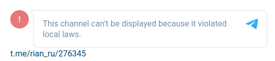

В этой теме Обсуждение: Блокировка Jabber/XMPP в России обсуждается блокировка Jabber, но кажется тема перерастает в обсуждение выбора мессенеджера, поэтому предлагаю продолжить тут.
Яббер хорош с OMEMO, по крайней мере не слышал, чтобы в судах фигурировали переписки, в отличие от других мессенджеров. Но, конечно, возможна утечка по вторичным каналам (временная атака как в Tor). Чтобы этого избежать, необходим протокол с поддержкой постоянной связи с пересылкой мусора (по аналогии с mysterium network).
Jabber слишком переусложнен и старомоден, имхо. Вот альтернативные Matrix клиенты без E2E шифрования на линуксе выглядят интересней, если вам нечего скрывать, конечно.
В том плане, что там минимум настроек, при этом из коробки работает синхронизация истории, прикрепление файлов, фоток. А что еще нужно? Извините за небольшой оффтоп.
Jabber, если вы имеете ввиду XMPP, а не цисковскую реализацию в виде системы Jabber (клинет-серверную софтину) - то это протокол. И если говорить про XMPP - то это протокол, да старый (не понимаю чем это плохо, HTTP - тоже старый) хорошо структурированный и регулярно обновляющийся, а не конкретое клиент-серверное приложение, как Matrix.
Почитал немножно про Matrix, спасибо за упоминание, интересно, но это не сравнится с XMPP, и наверное даже с конкретной реализацией, хотя классно, что они такое сделали)
Про работу из коробки - не очень понятно что не работает для вас “из коробки” в XMPP и какую именно коробку вы открываете, - клиентов море, серверов тоже, в каких-то что-то работает, в каких-то нет. Сильная сторона XMPP и реализаций на его основне - это гибкость применения и настройки, ну да это сложней, чем эникейство, но в ряде случаев лучше любых телеграмов и зумов.
При том количестве платформ, котрые сейчас есть и появятся в ближайшие лет 10-15, я сомневаюсь что вообще будет какоя-то, даже коммерческая реализация хоть XMPP, хоть чего-то еще чтобы “работало везде, надежно и со всеми bells-n-whistles”.
Главное неудобство для меня, это что там устаревший подход. Как в Pidgin и старых аськах. Одно окно со списком контактов, кликаешь по контакту - открывается другое (хотя, в некоторых клиентах, например Gajim, можно сделать в одном). Дальше большая беда, многие клиенты отправляют историю в далекий архив и показывают белое окно (теряется нить обсуждения, можно забыть ответить). Для сравнения современный подход, это как в Telegram, Matrix - бесконечная прокрутка, но и сохранение недавних диалогов. Правда, неудобство уже в другом - трудно добраться до старых диалогов, но можно воспользоваться экспортом. Однако это нужно редко, я считаю. Хотя, если бы история была под рукой, как в старых мессенджерах, может и чаще ее бы перечитывал, как там было в прошлом. Ведь чего нет, тем и не пользуемся.
Так вот, во многих jabber прогах можно включить показ нескольких предыдущих записях, но не во всех. Например, в Pidgin это реализовано криво в плагине “История”. Каждый запуск клиента дублирует в логах старые строки.
Во многих jabber прогах много настроек (см. Miranda, например), это досаждает. Ведь, чтобы убедиться, что нет плохих настроек, все их хочется изучить, а это сложно.
Дальше в Matrix из коробки работает синхронизация истории (с E2E могут быть проблемы, поэтому я предпочитаю создавать чаты без него, для личных переписок это довольно нетривиально, правда, надо создавать чат в клиентах без E2E, а потом уже общаться можно хоть где). В XMPP протоколе есть XEP для этого. Его должен поддерживать и прога и сервер (надо найти фичастый сервер, например jabber.de). Но я что-то так и не видел синхронизации в действии. А только локальное сохранение это не очень удобно.
Обратная сторона, у Telegram, Matrix всё хранится на сервере, они привязаны к интернету (кэшируют только на мобильных устройствах, наверное они считаются доверенными). Есть риск уже к примеру бана на сервере. Это решается периодическим экспортом истории. Но сами понимаете это делается не часто (раз в месяц, например). И можно потерять доступ истории за этот срок в случае бана. Конечно, это не полная потеря (если вы не забываете про бэкап), но тоже может быть неприятно, если обсуждали что-то важно именно в этот месяц.
Так что здесь противостояние локальное хранение-серверное хранение. Везде есть свои достоинства и недостатки. Можно делать локальные бэкапы и джаббера, хранить их на разных облаках. Но удобство синхронизации истории все-таки для меня предпочтительней.
Отправил какой-то код контакту, приехал в другое место и он доступен.
Теперь о прикреплении файлов, фоток (и их превью). В Matrix это из коробки, хотя на серверах есть какой-то лимит на размер файла, может 100 мб. Также в XMPP этот XEP (HTTP File Upload) должен поддерживать и сервер и прога. Вот, например, фичастый jabber.de поддерживает (который содержит один человек в убыток, к вопросу о надежности) и почему-то только старые версии Psi+. Я потестил фичу. Действительно можно прикреплять файлы, фотки как в модных клиентах. Но (помимо того, что владелец сервера их видит), некоторые удалялись почему-то сразу, некоторые дольше жили (ссылки). Ненадежно. matrix.org живучее в плане файлов. Там даже если из клиента удалить, по прямой ссылке доступно. Фотки не очень удобно показывались в Psi. Кажется каждый раз загружались заново (не кэшировались). А архиве истории (т.е. другом окне) превращались в ссылки. Что-то в этом роде. Недоделано и ненадежно, у меня осталось такое впечатление.
Вот что в Matrix выпилили давно (чтобы снять нагрузку и для приватности) так это информация о наличия контакта в сети и когда он был онлайн. Статус прочитанности (вроде). Приходится жить без этой фичи, хотя она добавляет приватности и тебе. Например, ты прочитал сообщение, но пока не хочешь отвечать и контакт не обидится, потому что не знает когда ты был в сети. Напомню, в том же Telegram это не отключается. Можно лишь угрубить (до недавно, на этой недели, в прошлом месяце), но статус прочитанности офф. клиенты все равно показывают (хотя, наверняка есть некоторые хаки, чтобы сделать вид, что сообщение не прочитано, а оно прочитано).
Для прочитанности в XMPP также есть XEP (я не пробовал). А когда был онлайн это штатная фича. Хотя, тот самый фичастый jabber.de для приватности прячет эту информацию. И время всегда текущее. Так что это тоже и минус и плюс. Но в данном случае, Matrix и jabber.de примерно одинаковы. Скорее в сравнении с Telegram.
Я не упоминаю пока очень важный функционал для кого-то. E2E шифрование сообщений. В Matrix оно есть из коробки (не во всех клиентах), вроде user friendly, но могут быть глюки при синхронизации между другими устройствами (я неоднократно сталкивался и другие говорили). Поэтому я отказался от этой фичи. А то получится как белки, которые закапывают еду, сами забывают и умирают с голоду. В том плане, что нашифровашись, можно лишиться данных. Есть такой печальный опыт в Whatsapp, к сожалению. В Jabber надо подключать самому плагин OMEMO. Там тоже много нюансов (и кто-то говорит, что работает еще менее надежно). А еще есть риск забыть его включить и отправить нешифрованно. Более же старые плагины типа OTR, требуют чтобы контакты были онлайн, иначе шифрования не будет.
Хотя, я не понимаю почему с этим такие сложности. Если представить, что сообщение это зашифрованный архив и пароль знают только участники чата (у них хранится локально), в чем проблема с синхронизацией и расшифровкой? Но в современных системах не все так просто, там и ключи (пароль) для удобства через тот же канал передается и какая-то прямая секретность и подобное. Сложно это всё и потому ненадежно.
Tox кстати приватен, анонимен. Но у него из-за децентрализованной систему нет полноценных оффлайн сообщений (клиенты ставят в очередь автоматически и отправляют, когда оба контакта в сети). Так что надо держать постоянно запущенным. Конечно, нет синхронизации истории. Все хранится локально, в том числе и данные учетки. У брата глюканул диск и он потерял Tox учетку (uTox). К тому же у Токса есть уязвимости, которую уже экспуатируют. Вредоносные друзья могут то ли выполнить произвольный код, то ли узнать IP. Вместо Tox можно использовать Session. Это децентрализованный форк Signal. Там работают оффлайн сообщения, они хранятся в рое две недели. К сожалению, на Electron, т.е. жирновато.
Много написал и не совсем по теме, может тогда отдельную создать.
Предлагаю продолжить здесь: Выбор мессенджера.
Я вернулась к использованию Jabber после того, как узнала про клиент Conversations.
Он работает фактически как типичный современный мессенджер. Если не знать, что там под капотом Jabber, то и не догадаешься.
Функционально есть все, что есть в современных мессенджерах
- возможность одновременного логина на нескольких устройствах
- с хранением истории на сервере
- и ее синхронизацией
- интеграция с телефонной книгой (но контакты из нее автоматически не добавляет, только связывает уже существующие)
- еще одна небольшая мелочь - есть поддержка никнеймов как в современных мессенджерах, когда человек ставит у себя ник и все остальные его под ним видят (а не как в старой аське и старом джаббере, где ник привязан к локальному списку контактов). но правда это не работает с предыдущим пунктом - имя из телефонной книги имеет приоритет над ником… хотя в ватсаппе и телеге в принципе тоже самое - имя из телефонной книги имеет приоритет
- исправление последнего сообщения
- отображение того, что сообщение прочитано
- e2e шифрование (но я предпочитаю отключать, т.к. зашифрованная история сообщений не будет доступна на новых устройствах)
- обмен фото/видео/файлами через сервер
- с возможностью сжатия картинок и видео при передаче (также как в телеге, можно передать как фото со сжатией, или как файл без сжатия).
- и самое главное - аудио и видео звонки!
И на вид программа ничем не отличается от современного мессенджера. Никакой как вы выразились кучи настроек, необходимый минимум. Такой же интерфейс, как у Whatsapp и Telegram.
В общем - Conversations - это такой Jabber 2.0. Жаль, что только для мобильных устройств.
Для ПК приходится использовать Gajim, там все на порядок хуже. Как минимум нет поддержки звонков (в Windows - вообще нет, в Linux - есть, но протокол несовместим с другими приложениями, звонки нешифрованные и возможны только между двумя Gajim’ами), А также нет сжатия фото и видео файлов, что при современных размерах фото и видео файлов очень актуально. Особенно если если сервер личный на каком-нибудь дешевом VPS - файлы без сжатия быстро забьют все место на диске.
С веб-клиентами все еще хуже. Есть один сильно не совместимый с другими и один просто кривой.
Да, для полноценной работы Conversations нужен подходящий сервер - ejabberd версии 20.04 или новее. И кстати, развернуть и настроить его проще чем Matrix, про который вы пишете. stun/turn сервер у ejabberd встроенный, поэтому аудио/видео звонки работают из коробки вообще без настроек на сервере (если сервер на белом IP).
toxcore, Jami (GNU Ring)
у мен даже ноды ихние крутятся на впсках (opendht)
Мои хождения по мессенджерам были такие (могу немного перепутать порядок):
Сначала это был jabber.ru в Pidgin, несколько лет.
Потом Telegram.
Дальше начались эксперименты.
На фоне его западного хейтерства я удалил учетки и перешел в uTox (в любом случае, uTox стал запасным).
Польский Gadu-Gadu. Достаточно удобный, современный, кроссплатформенный (что интересно на Gecko движке), но, к сожалению, с довольно надоедливой рекламой, хотя мне и нравилось кликать по баннерам и смотреть на красивые фотки в польских магазинах, но попапы это уже перебор. А после блока в hosts оставался некрасивый белый placeholder и файлы прога редактировать не давала.
Немецкий Wire с E2E (на Electron), очень тяжелый.
И вот последнее, различные альтернативные клиенты Matrix (Quaternion, Spectral) без E2E. Иногда запускаю официальный Element.
Понятно, что с большинством людей приходится общаться в Telegram/Whatsapp. Когда-то очень давно был ICQ в QIP и Skype.
UPD: Еще немного современный ICQ юзал для звонков. Хоть и наш, но очень приятный легкий мессенджер, выглядит как клон Telegram. Немного Session. Пробовал Signal. Ну, сайтовский Facebook, email, лички форумов это уже немного другое.
Раньше смотрел некоторые группы в Viber, сейчас смотрю кошек в Discord. Изучал Vipole (очень интересный мессенджер, но сомнительный), немного Jami. Общался в IRC, в группах Matrix. Хотел бы зарегиться в китайском QQ, японском Line и корейском KakaoTalk, но не могу. Когда-то очень давно было две QQ учетки и я писал сам себе в Windows приложении. А американский бесплатный Wickr уже закрыли, опоздал. Что-то меня понесло, но многое было просто экспериментами. Хотя, группы в Matrix порекомендую. Discord интересный.
А Conversations куда может позвонить, кроме как на такой же клиент?
Мы используем для чатов, но звоним обычно по sip.
знаете у кого они шифрованные и это нормально работает?
Не совсем понятно что в целом вы имеете ввиду и куда вам нужно звонить. Звонки в любом случае могут быть только внутри Jabber’а. На обычные номера телефонов вы не позвоните. Ну так в любом мессенджере так же. Whatsapp, Telegram тоже могут звонить только на другой такой же клиент.
У кого они шифрованные и это нормально работает? - Собственно, у Conversations, и это нормально работает. Звонки Conversations ↔ Conversations в целом работают как часы, четко и без сбоев.
Теоретически, можно позвонить на любой клиент Jabber, который реализует такие-же XEP’ы. На практике похоже, что кроме как автору Conversations, реализация сего не особо интересна.
Есть DIno, в котором поддержка звонков в стадии тестирования, и они иногда даже работают, и на даже можно позвонить Conversations ↔ Dino, но очень много сбоев и в целом работает очень нестабильно.
Ну и про Gajim я уже упоминала, поддержка звонков только в Linux и только без шифрования. В Conversations и Dino, наоборот - только с шифрованием, поэтому Gajim с ними не совместим. Уже давно есть баг-репорт с просьбой реализовать совместимость, но разработчики пока его игнорируют.
Единственный минус Conversations и Jabber’а в целом - это недавно начавшиеся блокировки, из-за чего посматриваю на альтернативы.
Ну а sip… sip был интересен, когда была куча провайдеров, предоставляющих sip-телефонию физ.лицам по копеечным ценам. Сейчас почти все закрылись, либо переориентировались исключительно на юр.лиц, либо отгородились от РФ. А использовать sip чисто для внутренних звонков - ну такое себе, когда есть мессенджеры, где одновременно и текстовое общение, и звонки в одной программе.
Я имею ввиду, что XMPP клиенты, которые поддерживают аудио\видео потоки, тем более с применением шифрования несовместимы или почти несовместимы друг с другом (поэтому и спросил иронично куда можно позвонить с Conversation) и тому есть причины.
Это все скучно, но я расскажу и порассуждаю все равно)). Одна из таких причин - это отсуствие внятных стандартов и этой области и слабый интерес со стороны больших корпорейтов, которые используют мессанджеры как рычаг для удержания аудитории (например Gtalk когда-то был открыто совместим с XMPP, а когда появился whatsapp, который тогда был чистый XMPP, появились сторонние гейты-транспорты между сетями и все это прикрыли).
Другая, техническая, - в том, что SIP, как и XMPP - сигнальные протоколы, а не транспортные. Для передачи используется обычно RTP и он контролируется часто при помощи SIP, потому что там регламентирована более внятная система управления с точки зрения обычно телефонии. Поэтому мессанджеры на основе XMPP будут всегда текстовые, либо audio peer-to-peer, либо какие-то комбайны с применением других протоколов. Т.е. просто неспецифичная задача - текстовое общение и голосовое, слишком все по-разному.
Телефония сама по себе - довольно сложная штука и то, что мы видим в популярных мессанджерах - это верхушка айсберга, да и работает оно там, на мой взгляд так себе (по сранению со специльными устройствами). Да, этим можно пользоватся, но это низкокачественно, с приходом новых сетей, типа 5G впрочем может стать лучше.
Что касается шифрования (особенно потокового аудио-видео), особенно в популярных мессанджерах - это курам на смех, даже не буду обсуждать. Судя по всему - это все ломается на 1-2, тем кому это надо конечно. И все эти разговоры про безопасную безопасность в бесплатных сервисах от добренького дяди - ну наверное реклама какая-то для малограмонтной аудитории.
Почему в ТГ\WA\Zoomах все вместе? Наверное потому, что это коммерческие продукты - это в первую очередь, еще - борьба за аудиторию (думаю что это пройдет) и поэтому это очень сложные комбайны, которые стоят очень дорого. Плюс их задача - выжать максимум инфы из их клиентов, так что со временем туда вполне могут добавится совсем неспецифичные штуки: кошельки, всякие “удобные мульки” и прочие плагины. В принципе, ТГ туда и идет полным ходом.
В соседней теме я написал о проблемах с банк-клиентом, тоже блокируют. Скорее всего, все соединения, которые шифруются будут поврегаться принуждению в РФ в ближайшее время. Альтернатив просто не будет. Т.е. они всегда есть и будут, но это не просто охота за мессанджерами или впн-ами, эот охота за SSL\TLS. Кстати, отъезд как альтернатива))
Viber, Skype предлагали outbound. Платно разумеется.
Вроде их только больше стало, даже в рф… Просто телефония платная и надо номер набирать, контролируется государством и “вот это вот всё”. И еще нет добренького дяди, который в эппстор загрузит удобнейшее приложение телефона, будет его дописывать под все платформы 2 раза в месяц и не брать за это денех.
Ну и да, я тоже очень люблю и каждый день использую Conversations+Ejabberd+Gajim+Yaxim+SIPтелефонию и конечно классно будет если появится больше людей, которые разбираются, а не просто кушают с ладошки аппсторов всё подряд.
Я знаю ровно два клиента, которые поддерживают аудио/видео потоки с шифрованием. Я их уже перечислила - это Conversations и Dino. И они совместимы друг с другом.
Если вы знаете какие-то другие клиенты - поделитесь, я бы с интересом на них посмотрела.
Вот и я о том же - их, можно сказать нет. И даже если найдется еще пара - то это может быть очень временно. Завтра Conversations решат замутить супер-пупер фичу и даже с Dino не станет совместимости, потому что нет стандартов нормальных. Поэтому, как мне кажется, звонить и писать - это по-разному, т.е. в разных программах). И наверное даже это хорошо - больше мессанджеров хороших и разных.
Из мобильных клиентов мы используем Siskin, Yaxim, звоним, как я уже говорил, по sip-телефонам (железным и софтовым). Раньше Astrachat еще для IOS был неплохой клиент, звонить мог только в такой же клиент вроде.
Вот тут пишут про Audio движок в Conversations подробнее, посмотрите, там WebRTC используется, в принципе можно хоть в броузер позвонить; там они рекомендую клиенты Siskin, Beagle, Dino, Movim. Опять, же я не в курсе как оно работает на деле.
Согласен, звук как из помойного ведра из-за шумо или эхо подавления. Особенно стыд, когда это пускается в эфир в СМИ (привет Дождю, хотя не только, но они злоупотребляют, да и вообще по факту канал редкостная парaша, как оказалось). А в каких мессенджерах самый качественный звук? Без лишних обработок. Давно такой вопрос интересует. Скучаю по старой доброй стационарной телефонии, где было отличное качество (при хорошем аппарате), без этих проглатываний звуков и частот (даже с гарнитурой). Ну не мне вам рассказывать, послушайте удаленных собеседников в СМИ. Не было такого на стационаре и в спутнике (хоть и с задержкой, но слушать там приятно). Сейчас, к сожалению, экономят на всем, особенно бюджетные.
Я не знаю, почти никогда не использую эту функцию, потому что она для меня скорее бесполезна или больше раздражает из-за плохого качества\обрывов. Но я думаю что ни в каком мессанджере это не работает хорошо. Дело не только и не столько в телефоне\микрофоне\программе, сколько в канале передачи данных (особенно беспроводном) и способе передачи пакетов (протоколе).
Телефония никогда не была интеренетом и это были и есть отдельные каналы, со своим оборудованием, приоретизацией, протоколами. Скорее даже интернет “вырос из телефонии”, все эти скорости - 64, 128, 512, итд кбит\с - это мультиплексирование аудиопотока. В мессанджерах аудио\видео - это допфича “для бедных”.
Хорошее качество звук станет когда перестанут передавать аудио, и будут синтезировать его на другом конце, а передавать будут условно “текст”. Аудио часть безусловно пострадает, особенно поначалу, зато разборчивость будет отличная (если энкодер\декодер будет знать язык)
Не совсем мессенджер, но для голоса давно использую Mumble, полностью пересел на него когда добавили поддержку кодека CELT (который превратился далее в Opus). Стандарное шифрование AES, настраиваемый буфер и битрейт. Проблем никогда не было с качеством, на ADSL помню был лучшим из аналогов.
Токс не анонимен, как и все p2p системы. Использовал qTox для наибыстрейшей передачи файлов и папок, но сейчас почему-то в последнее время UDP hole punching не работает и соединение идёт через немецкие релеи.
RCE уязвимость была вроде в клиенте µTox, в qTox нет.
Раньше была возможность зарегистрировать имя на toxme.se и получать доступ к приватному ключу по паролю, но там случилась кидалово со стороны владельца хостинга. Затем был toxme.io, который тоже был разделегирован.
Matrix сервера так же не стабильны, периодически разделегируются. Клиент Element тяжеловесный, отальные с обрезанной функциональностью.
В своё время Jabber был почти единственной альтернативой AOL/OSCAR с клиентами под Java телефон.
Думаю в выборе необходимо исходить из потребностей и топологии мессенджера:
централизованный, федеративный (e-mail в том числе), p2p/мэш-сеть или оверлейный (torchat). Пользуюсь разными в зависимости от решаемых задач.
Как видим Telegram и Jabber плохой выбор.
Разработчик Conversation наоборот очень надеялся что Dino доделают. И там даже всё иногда работает если повезёт, даже синхронизация e2e чатов. Но как я написал нестабильно. Их можно попинать с просьбами всё это реализавать. Помочь в тестировании. Написать им что в РФ это востребовано. Возможно доделают Dino. По сути для широкого развёртываения XMPP в массы осталось только доделать Dino.
В мире XMPP шифрованные чаты с поддержкой истории работают надёжно пока что только в связке Conversation - Conversation.
Шифрованный чаты в Matrix всё меньше глючат. Они там по умолчанию, поэтому если бы это было бы массовое явление - уже бросили бы это шифрование. Гарантированного на них полагаться нельзя, а уж тем более полностью полагаться синхронизацию шифрованных чатов. Но использовать их для временной переписки можно уже сейчас. Шифрование также должно работать в FluffyChat и в NeoChat. Там в принципе они развивают подход библиотеки которые можно использовать, а GUI уже каждый пусть пишет как хочет. Так что Matrix недооценён (но переоценивать тоже не стоит). Там была проблема очистки истории из-за чего занятая память сервера просто разбухала. Вроде собирались чинить. Matrix гораздо более организованный чем Jabber. Шифрование они включили 3 года назад - это уже расползлось на все сервера. А обратная проблема хранения истории на самом устройстве дабы не перекачивать каждый раз тоже вроде решалась и была на повестке.
Все проблемы jabbera, матрикса и аналогичных - кто будет хранить картинки? Кто оплачивает банкет? Ни там ни там нет продуманной системы удаления истории. Даже в вотсапе Вы не откроете фото 2ух месячной давности. А тут это вообще плохо продумано. Вы думаете стикеры зачем внедряли бесплатно? чтобы пользователи не прикрепляли тонны аналогичных фото и стикеры на серверах телеграма хранились в единичном экземпляре(ну и в кеше). текст гонять на донатах это ещё можно. А вот держать 3ёх годичную историю шифрованных мемов - очень накладно.
А Sessions переводят на их криптопродукт Oxen который за деньги. Что пока что сложно в реализации и непонятно как с доверием.
По поводу Matrix оставлю это:
- GitHub - libremonde-org/paper-research-privacy-matrix.org: Privacy research on Matrix.org
- Why I don't use Matrix
Он во все стороны разбрасывает метаданные, что очень плохо. Плюс сервер жрет ресурсы не в себя. XMPP легковесен и стабилен, сервер работает на чем угодно, хоть на малинке под кроватью. В Матрикс почти все сидят на одном официальном сервере (в силу необходимости мощного дорогого хостинга), что плохо с точки зрения приватности.
Все проблемы jabbera, матрикса и аналогичных - кто будет хранить картинки? Кто оплачивает банкет? Ни там ни там нет продуманной системы удаления истории
Вы и должны оплачивать банкет. В противном случае контроль не у вас, а у кого-то другого. В ejabberd можно настроить срок хранения файлов, хоть неделя хоть год в зависимости от степени паранойи. То же и для размера загружаемых файлов. Думаю в других серверах аналогично. Поднять свой сервер несложно, в сети полно документации. Свой сервер на самом дешевом VPS или своем железе с ARM64 вроде малинки или Pine64 - это лучший вариант.
Я вернулась к использованию Jabber после того, как узнала про клиент Conversations.
Полностью поддерживаю - поднять свой подконтрольный сервер несложно с минимальными навыками. И в отличие от Matrix он будет просто работать на любом убогом железе. Админисирировать XMPP несложно. Еще плюшки:
- общие списки контактов (shared roster groups) - удобно для групп/семьи и т.п.
Самая большая проблема - пересадить контакты с WhatsApp/Telegram
- для этого в принципе есть транспорты, по крайней мере для Telegram работает
У Matrix раньше был плюс, что там был мост в IRC и можно было хранить историю IRC каналов всегда, а не только когда в сети. Хотя, он не очень стабильно работал и иногда отваливался. Сейчас он вроде накрылся. В IRC многие разработчики софта сидели, но не только, всякие каналы были. И про Израиль и феминистки.
Вот что меня раздражало в Matrix (и IRC/Matrix) владельцы злоупотребляли настройкой “показывать историю только с момента входа”. Как известно, если есть возможность создавать ограничения, владельцы чатов будут их создавать. Вот и здесь. Вышел из канала, вернулся через месяц и тебе не загрузится не только история за месяц, но и раньше, когда ты был в канале (хотя, некоторые клиенты могут до нее добраться, но не тогда, когда тебя не было в канале, конечно).
В общем, я был во французском групповом чате, сдружился с одной женщиной (просто интересные разговоры вели), но в этом году она умерла от рака. И как раз во время ее последнего посещения чата, я покинул канал (ну, у меня бывают заскоки из-за других людей). Так что я ее последнее сообщение не смог увидеть. Просил сделать экспорт чата хотя бы за то время, но вредные французы отказались.
К чему я все это, в Телеграме такое немыслимо. В Telegram если есть приватные каналы, но когда пустят, доступно всё.
А про Матрицу это я говорил про нешифрованный публичный чат. В шифрованных E2E публичных чатах старая история в принципе недоступна.
Был популярен среди некоторых anontier.nl, но он накрылся вроде.
Вообще с Matrix я уже собаку съел.
Я знаю ровно два клиента, которые поддерживают аудио/видео потоки с шифрованием. Я их уже перечислила - это Conversations и Dino. И они совместимы друг с другом.
Beagle IM для Мака с ним нормально работает
Conversations и Dino это, конечно, хорошо, но ведь это только смартфоны.
Что мне не нравится в Jabber, в групповых чатах (конференциях) в Pidgin грузится только 10 последних сообщений. Видимо какого-то XEP не хватает. А как обстоят дела с синхронизацией истории в публичных групповых чатах Jabber в современных клиентах? Я думаю, они не очень распространены.
Что мне не нравится в Jabber, в групповых чатах (конференциях) в Pidgin грузится только 10 последних сообщений.
Есть XEP для MAM - архив сообщений. Все должно настраиваться. Но это на усмотрение владельца сервера/конференции. Насколько я знаю, некоторые mam полностью отключают, например jabber.ru. И это может иметь свой смысл из соображений приватности. Вы же не хотите чтобы товарищ майор вас посадил за какое-то сообщение пятилетней давности (которое было законно в момент написания)?
Я бы хотел, чтобы история хранилась хотя бы год-два и чтобы каналов побольше. У jabber.ru вроде выкладывали архив. Или он сам или сторонний проект. Но не все каналы.
В принципе, интерес к Jabber есть у европейцев. Особенно немцев, которые любят легкий софт. Хотя, мейнстрим opensource разработчики мигрируют из IRC в Matrix. Но на каждом Jabber сервере свои конференции.
Если знаете сервер с MAM с большим количеством публичных групп, поделитесь.
Можно даже сделать такую экзотику как мост IRC в Jabber. Готовых проектов я почти не видел, но это возможно. Но не все IRC каналы разрешают мосты (публичные). А есть еще IRC боунсеры (вышибалы), которые сами хранят историю. Вообще, можно общаться даже в IRC (в личке). IRC также есть в I2P.
Вообще, можно общаться даже в IRC (в личке). IRC также есть в I2P.
Общаться можно в чем угодною Было бы с кем. Проблема в том, что массовая аудитория нашла для себя вотсап и телеграм. И им по большей части ничего ненужно.
Это в России. Во Франции Telegram непопулярен, вместо него Facebook messenger. А для общения с семьей сторонники приватности заводят себе Signal.
Из России многие уехали в Турцию и Израиль. Надо посмотреть какие мессенджеры популярны там.
Поддержку Watsapp и Telegram уже делают в Miranda, можно совместить с Jabber и IRC. Однако разработчики Miranda не хотят связываться с Matrix и Signal, потому что они непопулярны у нас.
Ну а я для общения с семьей (большей частью с братом) могу использовать что угодно, экспериментировать. Пока планов уходить с Matrix нет, к тому же этот мессенджер застал покойного уже кота.
Я бы хотел скомпилировать Spectral для Windows. Красивое, но заброшенное приложение на Qt5, хотя еще работает. Не получается. Visual Studio одна сплошная проблема. А с Msys он не полностью совместим, там код для уведомлений дергается нативный виндовый, надо тогда править его. С сайта виндовые артефакты удалены и в web archive не осталось.
Картинки и файлы годовой давности доступны.
А что с Matrix? Для него нужно не убогое железо? Или сложная настройка? Просто думаю о том, не поднять ли его как резервный вариант. Я так поняла, что он по обычному https работает, а значит шанс блокировки роскомнадзором крайне низкий, в отличие от Jabber.
Да, по https. Сервер жирный говорят, на питоне. Клиенты есть разные, официальный на electron, web, есть много сторонних на си qt5, но менее функциональные, особенно в части e2e.
Если на вашем сервере пользователи будут общаться с пользователями matrix.org, то медиа контент будет синхрониться и храниться у вас на сервере, т.к. федерация.
Если ркн заблочит matrix.org, у сервера будут проблемы при синхроне. Говорят, он туда лезет, даже если все пользователи местные. Но по серверу я не сильно подскажу.
Я так поняла, что он по обычному https работает, а значит шанс блокировки роскомнадзором крайне низкий, в отличие от Jabber.
xmpp прекрасно работает на порту 443, можно проксировать через sslh тогда xmpp трафик будет работать с xmpp сервером, а обычный https пойдет на веб сервер. Все прозрачно и стабильно ценой небольшой задержки sslh. Можно настроить dns srv записи чтобы при недоступности 5222 все шло на 443. Еще есть такая экзотика как bosch - весь трафик xmpp через простой http, это было сделано специально для сильно лимитированных файрволов. В XMPP очень гибкая настройка и нагромождение возможностей, в отличие от Matrix
А что с Matrix?
Да, сервер жирный на питоне. Требует несколько гигабайт RAM и грузит CPU. Есл взять ejabberd (на Erlang), то разница просто колоссальная. Кстати ejabberd поддерживает несколько протоколов (еще mqtt) и обещают вроде завести Matrix. Если ejabberd заработает с Matrix то это будет очень здорово
Кроме того он лучше работает на старых ОС таких как XP/Vista, по сравнению с Matrix/Telegram/Signal.
Если бы я остался на XP, я бы пользовался XMPP.
Даже в довольно старой убунте 16.04 2016 года (ровеснице Win10) не так просто оказалось завести Matrix клиенты. Я установил Qt 5.12 из PPA, скомпилировал GCC 10 и сами клиенты. Это хорошо опыт уже был.
Напоминаю, что нынче в моде блокировки по протоколу, а не по порту.
Перевесить XMPP на порт 443 не поможет. А то, что работает по обычному https протоколу, имеет шанс выжить.
Мне тоже очень нравится XMPP, но блокировки могут не оставить выбора.
нынче в моде блокировки по протоколу, а не по порту
Это да, но играть вечно в кошки-мышки с неадекватами и продолжать проживать в стране с деградирующим населением без перспектив на будущее будет еще дороже. Так что наиболее эффективно радикальное решение проблемы блокировок - просто попрощаться и покинуть. К сожалению не для всех и не всегда это возможно.
xmpp может работать по https. Но есть такой XEP-0368, соединение по простому прямому TLS https, если это идет на 443, то должно работать и с лимитирующими фейрволами пропускающими только https. Если сделать простой веб сайт заглушку и завернуть весь трафик на 443 через sslh, это решение будет устойчивым к active probing. Можно на том же vps развернуть какой-нибудь https прокси вроде dumbproxy и заворачивать соединение через него. В этом случае дополнительный плюс - можно его же использовать как легковесный впн. Еще более вычурный вариант - поставить фронтенд на vps в российской зоне и с него прокси на другой vps за ее пределами. Обычно даже vpn в РУ не блокируют или меньше блокируют.
Я не в РФ поэтому не знаю как стабильно это работает с РКН dpi. Но это решение (dns srv XEP-0368, порт 443) стабильно работает во всяких аэропортах где даже впны заблокированы и даже на 443.
xmpp мне кажется достаточно устойчивым в силу нагромождения разных возможностей и настроек (как самого сервера так и окружения) и приватный. Но играться с настройками естесственно возможно тоолько для своего сервера, это сильное ограничение.
Есть ещё реализация на Go, Dendrite.
Насчёт проблем с синхрой, можно отключить подтягивание ключей с matrix.org в настройках сервера.
Пока отлично работает, но может быть легко заблокировано, т.к. там светится ALPN jabber-client в Client Hello.
Такой вариант тоже пока работает, но обещают в скором времени эту недоработку (отсутствие DPI у хостинговых компаний) устранить.
Проблема в том, что если, а скорее когда, оба вышеперечисленных варианта не будут работать остается только:
- Изменять протокол, чтобы он не детектировался DPI, с пересборкой всех клиентов и сервера под измененный протокол.
Проблема в том, что получаем несовместимое ни с чем нечто.
Вторая проблема, так как это будет собственная сборка, то на мобилках лишаемся push-уведомлений. Дело в том, что прямое соединение с сервером работает нестабильно и ест батарею, в отличие от push-уведомлений по XEP-0357. - Либо переходить на Matrix или что-то другое
я не думаю что matrix спасет (в долговременном режиме) если будут серьезно блокировать, по крайней мере все сторонние серверы отвалятся (а у матрикса их очень мало). В качестве временной меры может быть стоит попробовать. Нужно что-то p2p вроде tox, но это тоже легко детектировать по протоколу и пресечь если будет распространяться в массах.
Не набегаетесь. Лучше разделить мессенджер и средство обхода блокировок. При блокировке хостинга целиком, стандартные протоколы не помогут. Двигать или использовать другой прокси проще.
Лучше разделить мессенджер и средство обхода блокировок
Мне тоже это кажется наиболее разумным решением
Нужно не p2p, а то что выглядит как обычный https. Потому что известные протоколы, вроде xmpp, могут блокировать и уже частично блокируют. Неизвестные протоколы, которые выглядят как поток мусора и никак не детектируются, как показали недавние события, тоже могут блокировать и уже есть прецеденты. При этом блокировка официального сервера меня не волнует, т.к. предполагается использование личного сервера для приватного общения с семьей/друзьями.
Пока из претендентов вижу только Matrix. У них перечислено несколько разных серверов, не только тот что на питоне, возможно не все такие прожорливые. Надо будет потестировать.
Еще знаю Rocket.Chat, у нас на работе он используется в качестве корпоративного мессенджера. Но он мне не понравился. Общение возможно только внутри одного сервера. Один сервер, один клиент, без альтернатив. Иногда обновление сервера выходит раньше клиента, ставишь обновление и отваливаются какие-то функции, после чего ждешь обновления клиента, чтобы все заработало. Нет нативных аудио- и видео-звонков, они реализовано через интеграцию с другим сторонним сервером (Jitsi). При звонке просто открывается по сути окно браузера, в котором открыта страница сервера Jitsi.
Сагитировать семью/друзей установить какой-нибудь альтернативный мессенджер, и перейти туда из стандартного Whatsapp/Telegram, где общаются 99,9% человек, еще возможно, хотя и сложно.
Но установить и настроить всем кроме мессенджера еще и какую-нибудь программу для обхода блокировок, единственной целью которой будет то, чтобы этот мессенджер мог работать - из серии “миссия невозможна”.
Поэтому нужно, чтобы этот мессенджер работал без средств для обхода блокировок.
XMPP не хватает возможности ведения каналов. Фича маст хэв. Кстати, а где сейчас есть такие варианты?
Один деятель тоже хотел раздавать мессенджер с одной кнопкой, а теперь у вас ТСПУ и белые списки всего.
Проблема том, что - не скажу за все население РФ, но по крайней мере могу сказать про свое окружение - люди предпочитают не заморачиваться и идти по самому легкому пути.
Заблокировали Facebook - люди ушли в VK. Заблокировали Telegram - люди ушли в Whatsapp. Если заблокируют и его - ну, уйдут в VK Messenger, благо клиент у многих уже стоит (с этого года онлайн уроки в школах строго через VK Messenger, а вскоре и все общение типа родительских чатов вроде туда же собираются переносить, поэтому в семье с детьми-школьниками он 100% уже есть). Заблокировали торренты - люди ушли на онлайн-сервисы, где даже скачивать не надо. И так далее по списку.
VK с его мессенджером точно не заблокируют, т.к. он сотрудничает с органами и сливает им данные, а обычным людям и этого хватит.
Только я одна из немногих, кто заморачивается приватностью и т.п.
Поэтому да, как бы это ни было сложно, нужен мессенджер, который бы просто работал без заморочек.
Мне кажется начинать нужно со средств обхода блокировок. А сообщения просто дополнение. Мало кто из обычных людей будет ставить еще какой-то экзотический мессенджер. Ну только если есть два условия: вы им очень важны и с вами нельзя связаться иным способом. А получить доступ к неработающему инстаграмчику и скоро ютюбчику важно всегда и для всех.
В Matrix тоже есть какая-то negotiation, и скорее всего аналогичным стандартным механизмом tls, т.е. alpn.
Проблема политическая. Ее невозможно решить путем перескакивания с мессенджера на мессенджер и с впн на прокси раз в две недели. Наилучшее решение - покинуть агрессивную среду. И чем раньше тем лучше. С течением времени это будет все сложнее из-за ужесточения правил и конкуренции с другими покидающими.
Я смотрела инструкции по установке и настройке, там фронтендом выступает простой веб-сервер (nginx, например). Т.е. никакого механизма нет, это обычный https.
Кроме того, есть подозрение, что даже для XMPP совершенно не нужен ALPN. Тесты с командой openssl s_client из темы про блокировки Jabber, эта команда посылает Client Hello без ALPN, и при этом соединение работает.
Но беда в том, чтобы реальные клиенты не использовали ALPN, нужно править код клиентов. Также, отсутствие ALPN исключает возможность применения sslh.
Вы сами написали: К сожалению не для всех и не всегда это возможно.
Я уже отметила про свое окружение - все тупо перешли на то, что доступно, и никакого обхода блокировок никому (кроме меня) не нужно. А попросить установить еще один мессенджер - в принципе, без проблем (если он будет просто работать без заморочек и спец-средств).
Выбирать можно завыбираться
Digital Communications Protocols - Sheet1
PS Вроде JAMI нет? Для меня главное p2p. Все сервера перманентно уязвимы просто про некоторые уязвимости мы незнаем и их можно извне сканировать и аккумулировать с них трафик. Пока не пользовал, сам в муках выбора, чтобы всем сразу ссылку кидать и не париться. Понятно от массмаркета никуда. Но для своих хочется приватного уголка для потрынделок на кухне.
Это не может быть долговременным решением, а ставить себе раз в месяц новую прогу или менять настройки вряд-ли они будут. Единственное решение - транспорты. С телеграм есть рабочие варианты. Тогда все будут пользоваться своими любимыми приложениями. Ну и есть надежда на последние европейские регуляции об интероперабилити, пока фейсбук и вотсапп.
В вашем случае (я скорее тут обощаю вас и еще некоторых других участников этой ветки) получается такой набор требований, реализация которых на практике слабо представляется.
Т.е. Хотите: приватность, безопасность, фичастость, обход блокировок, массовость, простоту использования. Но наверное, если бы такое было возможно, оно бы уже существовало, разве нет?
Тогда, наверное, ejabberd тоже рискует стать “жирным и тормозным”))) Или очередной закрытой реализацей какого-то гейтвея, который проработает до следующего инвестраунда. Если честно, это всегда компромис и очень нестабильный. Вот сами представьте, например, настало прекрасное будущее: вот написали они этот супер-гейтвей между всеми на свете протоколами. А на следующее утро в одном из протоколов что-то поменялось и оно перестало быть совместимым с остальными.
Я наблюдаю за таким не одно десятилетие (не в мире мессанджеров), и как правило, все эти гейтвей - просто костыли. Да, оно иногда работает, помагает, но серьезно вряд ли кто-то в такое вписывается на долгий срок. Поэтому когда-то стали популярны мультипротокольные мессанджеры типа Миранды или Триллиан, но корпорациям они мешают и с ними борятся. Там наверное до сих пор хорошо помнят смерть ICQ.
У меня есть свой почтовый сервер, но я быстро понял, что это бесполезно, с точки зрения приватности, потому что мои пиры - на мейлу, гугле и прочих гига корпорейтах))) Мою переписку все равно читают. Вот и тут также.
Думаю, что это не решение. Такое уже было и закончилось сворачиванием каждого мессенджера внтури себя. Я выше писал о том, что все эти публичные мессанджеры - это дорогие корпоротивные продукты, они охотятся за аудиторией и никто не позволит утекать этой аудитории в соседние мессанджеры через гейтвеи. Кроме того, обо всем этом еще нужно договорится между собой (читай создать индустриальный стандарт, такой как XMPP), и это никому не надо.
Я тоже о таком мечтал лет 15 назад)) Да и сегодня тоже, но вижу что оно “едет не туда”.
К чему я это все тут написал - мне кажется логично выбирать инструмент, в т.ч. по задачам. И нет универсального случая, “на все случаи жизни”.
И еще я вспомнил про такой прикольный проект, как Delta Chat который работает поверх e-mail. С точки зрения простоты и наджности - очень хорошо, потенциальный охват не меньше, чем у WA и TG вместе взятых)), никто не заблокирует, шифровать сообщения можно прекрасно.
Deltachat прикольный, да. Но шифрование прикручено к нему. Если задача просто слать сообщения наиболее надежным способом, просто чтобы доходило, может подойти. Кто абсолютно не согласен ставить новые проги, будет читать письма в веб интерфейсе Яндекс почты. Но приватность близка к нулю, при использовании российских сервисов. И почтовые сервисы уже блокируют (proton напр.). Скорее всего эта практика будет расширяться. Одна из причин: нежелательнве рассылки.
У Delta Chat все прекрасно, кроме протокола, который он использует. Нормальных почтовых сервисов уже не осталось(мало у кого можно будет гонять шифрованные сообщения без привлечения внимания), а свой сервер поднимать и поддерживать это гемор и не безопасно. А клиенты да хорошие. P2P бы ему вообще была бы красота. Был бы скил форкнул бы и прикрутил…Если кто сделает будет топ
Не обязательно свой сервер. Можно привязать провайдера вроде migadu.com к своему домену. С почтой фундаментальная проблема это защита от спама. Высок шанс что со своего сервера не будет доходить до микрософтов и гуглов. Проблема решаемая, но требует постоянного внимания.
Еше один вопрос: сейчас большинство больших провайдеров требуют oauth2, и у них risk-based auth. Могут тупо просить ввести второй фактор, и т.п. в самый неподходящий момент. Прлучается что свой сервер накладно, чужой неудобно и иногда ненадежно и опасно. Что-то вроде migadu должно работать. Но это не универсальный рецепт. Большинство останется с Яндексом и будет радо раздавать все свои и мои данные. Первая же проблема с подключением и запросом чего-то непонятного заставит вернуться на приложение мэйл.ру. Там же все работает…
Допустим я прикрутил, а остальные?) Почта есть у всех и она вся на массмаркете. Впрочем сами же об и сказали…Про oauth2 тоже верно, сейчас даже не каждый почтовый клиент можно прикрутить, гуглу мне пришлось телефон слить, чтобы тундерберд прикрутить. У дельты там помоему список есть поддерживаемых публичных сервисов. Но опять же все упирается в третьих лишних
Получается что Delta chat создает дополнительную сушность которой многие не будут пользоваться. Если задача - коммуникация с околослучайными людьми, проще тогда писать прямо в емэйл. Зачем именно чат? Как уже говорилось выше, не сушествует идеального инструмента.
Всё так и есть. Только если разговор про шифрование - никак вы толково не настроите шифрование в XMPP для обычных пользователей. Зачем обычным пользователям шифрование? Чтобы необычные пользователи не выделялись.
Только стоимость обслуживания получится слишком высока в расчёте на 1 пользователя. В каждой семье должен быть сисадмин который только и делает что бегает и настраивает. Если Вы считаете что хватит для 5% граждан страны - то Вы ошибаетесь. Когда такого вот трафика станет 5% - его окончательно незаметно задушат и не будет у Вас никакого своего мессенжера. Ваша защита - это толпы обывателей которые используют аналогичные технологии. И чтобы самому потом можно было спокойно пользоваться - надо обеспечивать “зевак”.
Это не проблема Матрикса. Там вроде бы даже есть возможность гранулярно дать кому-то доступ ко всей истории. Ну или это было в чате 1-на-1.
“Dino - Modern Jabber/XMPP Client using GTK+/Vala”
лезет может и лезет, но для локального сервера все можно реализовать без внешних идентификационных серверов. Это когда поиск собеседника на другом сервере - вот тогда начинаются постукивания. Вроде обещали минимизировать и дать возможность настроить свой идентификационный сервер. На чём закончилось - не знаю, на F-Droid плашки пооубирали(кроме плашки для Apps плагинов с центрального сервера на офф клиенте).
да, мы видим что население деградирует только в РФ… особено в свете последних событий. Давайте воздерживаться от слишком провоцирующих заявлений.
Если заблокируют и не предложат альтернативы - очень легко. Сами прийдут с бутылкой на поклон. Но если будет готовая альтернатива - то шанс перехватить иициативы есть, но тоже не просто.
Матрикс в немного извращенном виде. Вотсап на нероссийской симке.
Именно.
Вы читали как это работает? Это самое обычное PGP шифрование писем, но интерфейс в виде чата. Это просто почтовый клиент с шифрованием и особенностями GUI. Нет там вообще никакой сущности(ни в виде маленького гномика ни в виде чего либо другого). Насколько я понимаю там можно из этого клиента кому то написать просто письмо без шифрования.
Да, Proton очень сфокусированный проект и не может разбрасываться ресурсами на пустую болтовню пользователей.
Запертят ли мейджеры мы пока не знаем. Дельта - молодой проект и его финансируют, чтобы посмотреть к чему такое может привести. Зато мы понимаем как мейджеры ведут себя: посмотрите на всем изместного Vladимира и его банду - их стратегия - это не изменение тенденций в обществе (например реальная борьба с коррупцией), а возглавление этих тенденций и дальнейшая манипуляция. Если корпроации увидят выгоду для себя в таком поведении пользователей (как Дельтачат) они только рады будут, но попросят что-то взамен. Ну и да, такой канал связи врядли будет супер популярным. Современным пользователям от мессанджеров надо что-то другое.
Все относительно. Если интересно, то есть такие проекты,как Mailcow или Ireadmail. Там за вас все настроили, надо просто захостить. Кому-то проще\дешевле\познавательнее все собрать самостоятельно. Кроме того,есть куча (не куча конечно, но есть) серверов в сети Tor, бесплатные и без “СМС”. Шифруйте сообщения, никто читать не будет. По крайней мере, пока вы никому серьезномому не понадобились. А если вы им понадобились, то скорее всего, у вас уже есть служба безопасности, защищенные каналы связи и аудит.
У вас правда много спама в почте?
Точно! есть целые сообщества, где обсуждают мертв ли самостоятельных хостинг почты или нет. Потому что многие гиганты как будто специально иногда зажимают мелкие серверы и плохо принимают от них почту (хотя судя по опыту, просто большинство почтовых админов не умеют это настраивать). Gmail-ам же выгоднее продать какому-то мелкому бизнесу свой корпоротивный хостинг почты, чем обрабатывать её бесплатно.
Опять же, если есть бюджет (причем очень небольшой, но не бесплатно) и такая задача - довольно просто можно купить почтовый релей, через них доставка очень надежная (хотя и без них тоже все ок, но требует настройки автоматики, уведомлений и прочего, т.е. да, внимания)
Ну вообщем-то с использованием “бесплатных” ТГ, ВА и прочих мейлру, те же риски, вроде как сохраняются.
Всегда будут третьи и четверные даже)) Мне кажется что проблема не в том как их исключить, а как научится действовать с их участием. Ну и да, чем быстрее и массовей будет развиваться такой вид DIY (do it yourself), как Selfhosting, тем больше конкуренции будет и более разнообразный будет рынок “социальных контактов”. Разумеется, selfhosting никогда не будет доминировать, но вполне способен скорректировать правила игры.
не до конца понимаю что вы иметее ввиду, но поверьте, это далеко не так. Не только в РФ и как бы это сказать… не то что бы деградирует. Упрощается…
Вы их недооцениваете. Конечно предложат. Уже предложили.
Да и вообще “полезнее для ментального здоровья”)) На полном серьезе. Я до сих пор не могу поверить в такое бурное развитие instant message. Будто кто-то “спланировал” этот взрыв. Ну серьезно, кому это надо в таких количествах. Просто непонимаю что там такого нужно постоянно друг другу диктовать и писать; и откуда столько времени и энергии на чтение этих потоков сознания. Скорее всего, это пройдет (как и все остальное впрочем).
Я представляю как работает delta Chat. Мой вопрос в другом: Зачем обычному пользователю Мэйл-ру ставить другую, отдельную прогу, которую неизбежно прдется как-то сложно настраивать (oauth2, отдельный пароль приложения в глубине настроек мэйл-ру и т.п.) если уже есть прога Мэйл-ру которая просто работает. И уже принимает сообщения от меня с Delta Chat? Рассказы про GPG приватность и шифрование писем, а также утверждения что приложение мэйл-ру тащит кучу данных помимо собственно почты (геолокацию, ID устройства и т.п.) будет воспринято с недоумением (им же нечего скрывать, правда?). В чем прикол именно ЧАТА? Зачем безнадежно перетаскивать таких челов в Delta Chat? Я погу понять для чего Delta Chat нужен именно мне, но простому обывателю-то нужна киллер фича. А ее нет.
Точно - лет N назад люди в основном писали нормальные сообщения, в которых был ясен смысл, контекст разговора и общий вывод, что хотят-то. Теперь могие пишут короткие и невнятные обрывочные фразы из которых часто неясно о чем идет речь и что нужно… И еще эмодзи и стикеры - это просто ментальный рак:)
Вы их недооцениваете. Конечно предложат. Уже предложили.
Предложат да, какую-нибудь очередную дичь в красивой коробочке, с прямым доступом тов. майора и выкачиванием всех доступных данных напрямую из моего мозга с целью их использования по своему усмотрению и продажи третьим лицам. И все это будет тормозить. И обрастать новыми ненужными фичами. Нет, спасибо
Точно! есть целые сообщества, где обсуждают мертв ли самостоятельных хостинг почты или нет.
Вот именно, хостить свою почту самому можно но есть риск попасть в “спам”. Причины этого хорошо описали - Гуглам и пр. не нравится. Выход - поручить хостинг почты небольшой компании придерживающейся открытых стандартов и по возможности привязать к своему домену (хаха, домен тоже чужой) чтобы при необходимости можно было перенести в другое место, хоть на свой хостинг
Иногда даже без знаков препинания.
В Южной Корее, например, это распространено. Муж отправляет стикер “муж в баре”, значит задержится. И ничего печатать не надо.
А еще раздражают, конечно, голосовые.
Вы сейчас описали классический азиатский софт, в том числе мессенджеры. Где из одного приложения можно и обед заказать и за квартиру заплатить и пообщаться.
Причина в спаме.
Кстати, раньше в email активно общался.
Да, почта постепенно выходит из употребления. Сейчас для многих это какая-то хрень для регистрации, уведомлений, получения билетов, иногд рассылок и ссылок, прочих служебных нужд.Но не для общения. Поэтому общение из Delta Chat кому-то в Яндекс или Мэйл-ру будет неэффективным. Почту тупо могут читать с задержками, даже если дойдет.
Корпоративная почта это другое - там правит балл Микрософт и почта интегрирована с календарем и прочими рабочими штуками. И пользоваться ей не с Outlook нетриваальная задача для среднего человека. Тут Delta Chat тоже не в сильной позиции…
Если вы боитесь сотрудничества Telegram с властями РФ, попросите знакомых установить Matrix/Signal/Discord. Если даже их всех заблокируют, что-нибудь еще найдется.
А почта мне нравится от Vivaldi
webmail.vivaldi.net
Хоть он и требует номер телефона, но интерфейс легкий и приятный, работает даже в старых браузерах (Firefox 60).
Еще есть блог, но он на базе обычного жирного Wordpress.
Кстати, Инстаграмом люди вполне пользуются после блокировки. Даже довольно далекие от технологий. Непонятно как. Интересное явление, полюбился он им.
Мне очень нравится концепция Briar:
- локальные линки без интернета по вайфай и блютус, соединение через интернет(тор) до другой группы локальных линков
- шифрование
- ни каких симок, забыл пароль от локальной учетки-сам виноват
- история хранится локально
- подтверждение контактов
всё есть что бы переконтоваться до запрета смартфонов, но ни кто не хочет пользоваться.
Пользуется кто ни будь Briar?
Слышал про него. Это актуально больше при бедствиях.
Хотя, как показывает практика, в той же Газе, например, может не быть электричества, но быть интернет. А вот в Украине бы пригодилось.
Nextcloud Talk на собственном сервере?
Нужна федерация, насколько мне понятно. А это будет работать только на своем сервере. Такое решение подойдет для своей семьи/группы друзей но не для широкого круга полупосторонних.
Мне кажется спецификации Anyuta1166 сложно удовлетворить. Пока я вижу (1) емэйлы со всеми недостатками (2) транспорт из xmpp в телеграм и пр. Если действительно удастся убедить часть людей поставить новую прогу, зарегистрироваться, добавить конттакт, то (3) xmpp (4) matrix
Вся надежда на Пашу была в свое время. Но в итоге сделал очередной vkokodlasniki. Чистый эталонный мессенджер превратился в размалеванное чучело огородное. А в свое время обещал открыть код серверов. Щас бы просто свой сервер подняли бы и номера на автогенерируемый логин поменяли и все конфетка. Впринципе то, что должен был сделать наш нудист - ой, борец с системой. А вот если свой почтовый сервер поднять чисто для delta chat. Есть какие нибудь рекомендации по усилению безопасности? Как защитить сервер от внешней агресивной среды, можно ли скрыть вообще сам сервер от посторонних всЁ сканирующих глаз? Нужно ли постоянно его администрировать или поднял и забыл? И еще один вопрос нужно ли обязательно регистрировать домен? Пока глубоко не вникал во все тонкости, поэтому спрашиваю. Заранее благодарю
Поднять службу на обновляемой и стабильной ОС, например Debian.
Поставить firewalld (высокоуровневая надстройка над nftables для домохозяек); создать зону для внешнего интерфейса и указать target=DROP для игнорирования всех входящих пакетов; создать зону для вашей разрешённой подсети указанной в параметре source и добавить разрешенную службу, либо использовать тунель udp2raw для ответа клиентам только имеющим правильный ключ.
Периодически необходимо обновлять ядро и ПО для избежания эксплуатации уязвимостей.
Для получения сертификата Let’s Encrypt можно использовать сервисы nip.io или sslip.io.
Для каналов и всех держу Телегу, семью и друзей перетащил на Матрикс (давно в планах свой сервер), на всякий край держу apk Briar на телефоне. Раз в месяц получаю вопрос - у тебя нет ватсаппа? 
Надо поднять свой сервер Матрикс для своих и настроить мосты в Телегу и Ватсап - с такой комбой легче “переманивать” в Матрикс.
Спасибо, буду копать в этом направлении.
А какую модель угроз решает ваш выбор? С таким успехом можно и вк с одноклассниками использовать. Вам как раз мне кажется ватсапп был бы в самый раз. А Briar то то вообще бесполезная вещь.
Матрикс для конфиденциальности, телега как “связь с внешним миром”. Почему Ватсап лучше, а бриар бесполезен?
Briar может быть полезен в стране у которой на каждый чих не блокируется рубильником пол интернета и вокруг не стоят минивенчики с глушилками. И то польза сомнительная. А на всякий случай типо апокалипсиса рация будет полезней для связи.
Matrix вроде и хорош, но есть какой то осадочек, например зачем правительству Франции и Германии использовать отдельные форки, если так хорош то и пользовались бы. Хотя впринципе оценивая удобство и открытость, но если джабер могут блокировать на уровне протокола, то и здесь думаю если захотят блокнут. Впринципе для масс щас блокируется в случае чего абсолютно все.
Если выбирать для связи с внешним миром, то я предпочел бы использовать whatsapp вместо telegram по нескольки причинам:
-больше миллиарда пользователей (предпочту быть рыбкой в океане, а не небольшом озере)
-оконечное шифрование (да метадата вся у них, но думаю если и есть массовая слежка то работает по принципу флажков от нейросетей или вообще точечное вклинивание, клад можно найти только если знать где искать), nsogroup итд
-юрисдикция (тут понятно)
Но лучше не использовать ни то, ни другое.
А как быстро роскомнадзор отреагировал на открытие каналов в вотсап угрозой блокировки. Им всем плевать, о чем вы разговариваете друг с другом, вот вам шифрование хоть зашифруйтесь, пока не собираетесь в стаи и не пытаетесь влиять и управлять массами. Может это и хорошо. Думаю Мета тоже будет блокировать в своих американских интересах любой угрожающий движ типо захват капитолия. 

В моем сценарии телега лучше, за редким исключением все есть, плюс различные каналы. Шифрование в ней побоку, для этого матрикс. А бриар же какраз должен работать через wifi и блютус в случае чего. А если прям так наглухо будут глушить, то рации наверное тоже.
Вот видишь, поэтому я и спросил про модель угроз. Это всегда выбор между необходимым уровнем приватности/безопасности и удобством. Но на твоем месте все равно разделил бы чаты и каналы между двумя мессенджерами. Насчет раций я имел ввиду, что в случае серьезных потрясений типа экологических бедствий и тд, там уж не до глушилок будет…
И это тоже верно, не гадь там, где ешь. Общение в публичных каналах это риск, их лучше бы отделить. Меня как-то забанили на matrix.org и, если бы я держал там личные контакты, они бы пропали. Просто в один момент прога мне сказала “в целях безопасности произведен выход из аккаунта”, а повторный логин неудался. Я думаю Telegram более лояльный, кстати. Вообще, у matrix.org довольно плохая политика конфиденциальности (я как-то почитывал). Они, например, будут хранить данные о вас 7 лет. У Telegram всё намного приватнее на словах. Но это на словах, а как на деле (есть ли тайный сговор с правительствами) неизвестно. Он довольно мутный. Они, например, свидетельства канарейки переделали в чат бота по странам.
Ватсап, кстати тоже однажды забанил аккаунт родителей, когда на телефоне завелся вирус (возможно вшитый китайский, были также телефонные звонки в Китай). Правда, обращение в тех. поддержку и объяснение ситуации привело к разбану. В Telegram же бесполезно писать, хотя он и не банил.
Нет никакого ТАЙНОГО СГОВОРА. Это государственный проект 
Знаете почему в России еще не заблокировали Whatsapp? Потому что сразу все станет понятно. 
Привет, ребят. Решил поднять локальный ejabberd, посмотреть как все устроено изнутри, привыкнуть и отправлять заметки с телефона на комп напрямую (иногда удобно). И вот поднял на virtualbox ubuntu из под винды, вроде настроил по гайдам. Сервак работает, админ и один пользователь создан, логинюсь с браузеров - доступ есть, но с клиентов не могу залогиниться (gajim, pidgin, chatsecure) Ошибка. Настройки стандартные. admin@localhost user@localhost. Гуглежь чтото не помогает, в последнее время гугл вообще удручает, Кто нибудь поднимал, сталкивался? Буду признателен)
Что за ошибка? Нет соединения? Firewall блочит входящие на порт 5222? Проблемя невалидного самоподписанного сертификата? На сервер соединения идут? Что пишется в лог ejabberd?
Спасибо за отклик. Ошибка на Pidgin :
Соединение с test@localhost/ разорвано
Сервер закрыл соединение
Делал как тут How To Install eJabberd XMPP Server on Ubuntu | DigitalOcean
Сертификата нет, это же просто localhost. С хрома из винды залетаю в вербморду 192.168.1.17:5280/admin. На винде pidgin разрешен в firewall. В логах ничего интересного не заметил. Думаю в настройках конфига может чтото еще нужно настроить.
Как проверить? В Ubuntu telnet conected.
Firewall выключил полностью: ufw diasble. Без изменений
Psi+ попробывал, выдал ошибку более информативную : Ошибка обмена данными с сервером. Подробности: Сервер отверг STARTTLS
Видимо нужно донастроить работу с сертификатом, но что и где? Есть мысли?
update: starttls_required поменял в конфиге на false и заработало.
Psi+ помогла, навела на ошибку. Для локалки можно так и оставить прозрачно или все таки лучше дальше донастроить шифрование с сертификатом?
SSL лучше все-таки использовать.
Можете хотя бы с самоподписным сертификатом. Как сгенерить, возможно эта статья пригодится. Не забудьте permissions на файл ключей сделать чтобы никто не мог читать, кроме owner.
Но еще лучше использовать Lets Encrypt, правда понадобится реальный IP, и доменное имя.
Спасибо, да думаю нужно все равно сделать все по уму, тем более в дальнейшем без этого никуда. Но меня удивило, что в гайдах про эту ошибку ни слова не увидел, и сейчас вспоминаю вроде на глаза попадалась инфа, что при установке ejabberd самоподписанный сертификат генерируется автоматически и думаю наверно с этим связано, что про это нигде не было упомянуто или я путаю? Просто в начале я испортил конфиг и решил скачать чистый с гитхаба, сейчас думаю может из-за этого все пошло не так? Ну ладно, дальше думаю разберусь…
Включайте логи в уровень дебага, читайте сообщения в логах (используете grep чтобы делать выборку по содержимому - это супер мощный инструмент), используйте утилиты такие как tcpdump, nc, ping, traceroute, для DNS еще dig очень полезен. Когда правите конфиги (всегда) делайте копии типа server.config.bak.
И да, гайды - это хорошо, их стоит просматривать, но они также путают, устаревают (для некоторых проектов очень быстро) и часто бывают просто с ошибками.
Тут как с картами - или ходишь по навигатору всю жизнь и не понимаешь где ты, или блуждаешь поначалу, но учишься ориентироваться))
ejabberd очень хорошо документированный проект, единственное, что мне странным показалось - это формат конфиг файла, (не помню) но это кажется чистый json и если с програмированием знаком - то хорошо понятен такой формат. Еще у меня ejabberd пишет в логи всякие ошибки, которые вроде и не ошибки, его надо часто обновлять, потому что быстроидущий проект.
Это какой-то доволь но старый док. Вообще ejabberd настраивается конфигом ejabberd.yml. Может быть тот конфиг что по умолчанию ищет сертификат; а его нет. Или hosts неправильно указан. Или listen ip… Пример конфига можно найти тут: LavaTech / a3.pm · GitLab Его можно использовать как пример.
Лучше всего все-таки получить доменное имя хоть (DDNS) и поставить нормальный сертификат Lets encrypt, тем более что certbot довольно хорошо все автоматизирует. Но это стоит делать на VPS. Можно и дома на физическом сервере вроде Pi, тогда нужно на роутере сконфигурировать перенаправление портов, точно 80 (для certbot) 5222 минимум.
Начальная настройка хорошо описана в How to move the office to real time IM on ejabberd | ProcessOne и там еще есть дополнительные ссылки.
Кстати для тех, кто использует Signal и столкнулся с блокировками, были придуманы прокси-сервера (https://support.signal.org/hc/en-us/articles/360056052052-Proxy-Support). Очень хороший вариант, так как не отличим от HTTPS, и сервера поднимать можно буквально в один клик. Еще можно их использовать для сокрытия факта использования Signal.
После конфигурации получается ссылокчка, которую Signal распознает и сам настраивает прокси. Вот пример (рабочий): Configure Signal Proxy
Такой же подход есть в Telegram (думаю все это и так помнят со времен “великого противостояния”), тоже поднимается достаточно просто.
Для WhatsApp тоже недавно анонсировали прокси, но они немного кривые пока. Нужен отдельный прокси для сообщений и отдельный для медиа.
Разве Signal уже блокируют?
Signal и Whatsapp не рекомендую. Старые версии перестают работать.
Скорее всего так и получилось. Скорее даже конфиг был, но для старого хоста ,который я в начале настраивал, а когда новый конфиг добавил он его не принимал. Это я уже посмотрю позже, теперь знаю в чем дело было. Спасибо за наводки.
Часто не пользуюсь всем этим, поэтому со временем все как по новой начинаю с моими хобби заходами в devops 
Этот Signal вроде декларируется как некоммерческий и открытый проект, а метаданные пылесосит на ровне с корпоратами ватсап и телеграм. А мы знаем, что главный враг конфиденциальности это метадата
Неговоря уже о том, что регистрация по номеру телефона это уже не метадата а персональные данные
А есть ли какие-то материалы касательно сбора метаданных? Хотелось бы посмотреть на этот вопрос чуть более детальнее.
Что касается номера телефона - это отдельная точка боли. Но те кто используют номер телефона - принимают этот риск. Поэтому важно понимать, что кроме факта использования Signal отправляется куда-либо.
Сам факт использования это уже не мало. Учитывая, что номер телефона это не просто номер телефона, но и сам телефон который пилингуется(куда ходил, сколько там был, как часто итд). Хотя если регнуть на один номер, а ходить с другим это будет уже лучше, но все же. Рапиаренный как супер пупер секурный, установил значит уже есть что скрывать, значит давай показывай что у тебя там, ну мысль думаю понятна
Насчет меты, у них в протоколе нет защиты от этого, следовательно все базовые метки: кто, когда, куда, откуда и тд имеются по умолчанию, конечно они говорят, что ничего не собирают, ничего не продают, но сервера нынче дорого содержать, особенно такому распиаренному и централизованному продукту. Это энтузиасты могут за копейки поднять свой почтовый (привет delta chat) или xmpp сервера для узкого круга лиц, за донатики или скинувшись деньгами. Всегда нужно смотреть на деньги.
Из Википедии:
На серверах хранятся номера телефонов зарегистрированных пользователей, материалы открытого ключа и push-токены, необходимые для установления вызовов и передачи сообщений. Чтобы определить, какие контакты также являются пользователями Signal, на сервер периодически передаются криптографические хеши контактных номеров пользователя.
В сентябре 2017 года разработчики Signal объявили, что они работают над тем, чтобы клиентские приложения Signal могли «эффективно и масштабируемо определять, являются ли контакты в их адресной книге пользователями Signal, не раскрывая контакты в их адресной книге службе Signal».
Метаданные
Все коммуникации клиент-сервер защищены TLS. Разработчики Signal утверждают, что их серверы не ведут журналы о том, кто кому и когда звонил. В июне 2016 года Марлинспайк сообщил The Intercept, что «наиболее близкая к метаданным информация, которую хранит сервер Signal, — это последний раз, когда каждый пользователь подключался к серверу, и точность этой информации снижается до дня, а не часа, минуты и секунды».Механизм группового обмена сообщениями устроен таким образом, что серверы не имеют доступа к списку участников, заголовку группы или значку группы. Вместо этого создание, обновление, присоединение и выход из групп выполняются клиентами, которые доставляют участникам парные сообщения таким же образом, как и индивидуальные сообщения.
Т.е. несмотря на номер телефона, всё очень безопасно и прецедентов в СМИ не было, я так понял.
Конечно, провайдер интернета будет знать факт использования Signal хотя бы по коннекту к его серверам.
То есть каких-то критичных известных замечаний по Signal нет? А при использовании нормального уровня цифровой гигиены, он вполне на высоком уровне.
А что касается сокрытия следов его использования - выше писал про прокси. Сам так его использую более года. Не ради сокрытия, а ради проверки работоспособности технологии. Все ок. В логах DNS запросы только к прокси, другого ничего нету. Соединения так же только через прокси идут.
для россиянина это наверное самое страшное 
без проксей никуда.
но смс-ка то придет не через прокси. 
Но конечно если модель угроз устраивает, особых рисков не видите, то вполне. Удобная альтернатива, почему нет. Ведь в конечном счете мы не террористы, нам скрывать нечего))) Чисто для успокоения души 
briar
Про Delta Chat
Недавно появилась штука под названием Chatmail. Вроде как поднять легко, и париться не надо.
Насчёт домена точно не скажу, но похоже таки надо, судя по инструкции.
Привет всем. Назову несколько мессенджеров, не прозвучавших пока.
Во-первых, Session. У меня это повседневный мессенджер, работает безотказно, пользуюсь им не один год. Один из его плюсов - кристально чистый звук. Открытый код.
Во-вторых, его форк BChat. Рассматриваю его как запасную площадку в случае краха Session (он завязан на достаточно сложную инфраструктуру узлов сети). Событие крайне маловероятное, но как говорится надейся на лучшее, но исходи из худшего. Открытый код.
В-третьих, WireMin. Чудовищно прожорлив в плане трафика и батареи, так что скорее всего его место на десктопах, но в чистом виде p2p и с обфускацией ip (соединения строятся не напрямую, а через промежуточные узлы таких же пользователей).
В-четвертых, Keet. На альфа этапе. Наблюдаю за ним в надежде что получится нечто рабочее. Пока для повседневного общения не готов.
Звонки так же хорошо работают между Conversations и Monocles через Ejabberd, я бы даже сказал просто прекрасно, качество звука шикарное.
Полностью согласен.
Бабло решает и это было очевидно, он же не враг себе.
Администрировать нужно всё, можно конечно и забыть, но потом не нужно удивляться если тебя взломают.
Да, для почтового сервера домен обязателен.
Там же блокчейн используется. Насколько это через год будет хорошо работать и как много сжирать ресурсов? Есть ли какая-то оптимизация?
Я пока матрикс юзаю. Пересел из жабера. Но это не p2p. А в идеале хотелось бы p2p и чтобы шифрование в групповых чатах.
ps Похоже ,что сервер matrixorg ввел какой-то теневой бан. У меня всё ок со всеми собеседниками на любых серверах, включая личные и даже криво настроенные. Но те, кто зарегался в матриксорге, не видят мои сообщения. Нарушен обмен ключами (/discardsession не помогает). Выглядит так, будто самый крупный дефолтный сервер, находясь под давлением силовиков, решил поломать коммуникацию с любыми мелкими серверами ,чтобы все шли в один загончик. -А люди и идут, дефолт же. Превращая федерацию в централизацию. Госпади, какая нелепость.
Или паранойя и совпадение?
Как бы там ни было, p2p хоть и с издержками, но более живучий.
irc+ssl для текстовых
mumble+ssl для голосовых
Давно провереные и децентрализированые способы общения. Подымать сервера у себя дома для тру п2п.
Нас тупо загнали в прошлое на 20 лет
irc и mumble это не p2p решения, в обоих используется клиент - серверная архитектура
Для голоса перешли на Linphone. Очень довольны. Богатые настройки, можно даже задать кодек и битрейт кодирования речи, шифрование. Трафик гонится через Францию.
До этого с Telegram было одно мучение и звук хуже был.
Upd: есть автозапись разговоров. К сожалению, только в opus 32 kbps.
Федеральная тогда.
врятли, это слишком нагло, все бы уже разбежались и кричали об этом из всех утюгов, может клиент глючит.
А какие сейчас есть p2p? Кстати, думаю это было бы лучшее средство общения, если прикрутить к нему современные антидетект прокси, которые маскируют траффик. Новое это хорошо забытое старое, но улучшенное))
Session, например. Но его заблочили недавно влёгкую.
Остался Tox. В отличии от Session, он не поддерживает оффлайн сообщения. Чтобы сообщения доставились, клиенты должны засветиться онлайн одновременно, хоть это и автоматизировано. Не думаю, что трудно забанить Tox. У него обычно используются специфичные порты и количество bootstrap нод ограничено. Хотя, его часто пускают через Tor для сокрытия IP.
С точки зрения устойчивости к блокировкам лучше что-нибудь на I2P, несмотря на медленную скорость. К примеру, там есть некий малоизвестный I2P Messenger на Qt. Но кривоватый (наверняка, не без дыр) и историю принципиально не хранит.
Зато, поверх I2P можно пустить более традиционные XMPP и IRC, но это не совсем p2p будет.
Там в I2P чего только нет. К примеру, была программа для файлобмена Muwire на Java со встроенным чатом и email, но её попросили прикрыть.
К сожалению лучший и самый безопасный мессенджер icq был убит
Кстати да, кроме шуток. Самые первые версии ICQ 1997-98 годов работали вообще P2P. Тогда же еще NAT-а почти нигде не было. Сервер тупо выступал в роли “телефонного справочника” для клиентов. Все это без шифрования, впрочем. Прекрасные времена.
Насколько я понял, tox работает через dht, мне показалось это плохая идея. И как оказалось не зря. DHT публичен, привет ZeroСlick. Мне кажется, опять же на первый взгляд Session имеет похожую проблему…
I2P лишняя сущность.
Лучшая схема, которую я реально вижу это p2p, с роевой системой, как в Session(насколько я понял, при беглом просмотре), только в форме обособленных нод. Условно один на один обычный p2p, но в случае групповых
чатов, один из пользователей, который так скажем инициатор группы, переходит в режим ноды, и администрирует ее. Получается замкнутая система, без чужаков. О системе знают только участники. Даже незнаю есть что нибудь в этом направлении? Разумеется, это все должно идти через каконибудь antidetect proxy из коробки, чтобы из вне имитировать обычный серфинг, или общение в том же вайбере)))
Я хочу рассказать как меня подставил Jabber (jabber.de) и Pidgin. Поехал я в гости, а комп пришлось оставить на это время включенным. Решил я сохранить с ним связь, запустив какой-нибудь мессенджер (чтобы на другом компе можно было увидеть в сети или нет). А Pidgin взял, да и потерял связь с сервером (похоже был какой-то временный сбой на jabber.de, вот такая надёжность на noname серверах), и реконнект не делал. Вернее, он писал “Соединение”, но это фейковая надпись (мы проверили, такое поведение наблюдается при сбоях сети, не делает реконнект Pidgin, хотя и пишет что делает). В результате я немного нервничал несколько часов (мало ли что с компом), а это плохо для визуального снега, например (болезнь у 5% населения). Какая дурацкая прога и сервис, если честно.
Но кстати, это Jabber. А вот в IRC клиент HexChat вроде при потере связи вообще никак об этом не сообщает, сообщения просто не доходят. Pidgin хотя бы вывешивает плашку “ошибка”. Хоть в моём случае это и не особо-то помогло.
после вашего сообщения про ALPN-поле стало интересно, как выглядит трафик. В итоге скомпилил свой кастомный Conversations, просто этот клиент использую для xmpp. Там довольно легко получилось убрать это поле из основного TLS-соединения (где оно было “xmpp-client”). По сути одну строку закомментировать. Если нужно будет, могу найти точный адрес в файле.
Но ALPN остался при загрузке файлов на сервер, хоть здесь оно и “http/1.1”. Там это из-за библиотеки OkHttp, надо в ней что-то крутить.
Но это выглядит уже более стандартно, как мне кажется. Вряд ли https будут блокировать) да и со стандартным клиентом сейчас всё ок
На серваке стандартный prosody 0.12.4 с сертификатами от lets encript и настроенным Direct TLS на 443 порту - при проверке всё работало) а XEP-0357 Conversations вроде и не поддерживает…
Если нет требований к анонимности (без номера телефона, почты и тд) - пока оптимально подходит Signal + прокси для него.
Номер от посторонних можно скрыть в клиенте.
С одним фином успешно общаемся через Session. Удобно, что есть оффлайн сообщения (отправил сообщение и закрыл клиент), при этом децентрализация, шифрование и не требуется телефон/email.
Хотя, вот говорит задержки в доставке бывают, косяки.
Electron, да. Запускается (appimage), соединяется не очень быстро.
В ирке тоже это есть если настроить nickserv и memoserv
Пользователи Session говорят, что иногда оффлайн сообщения доставляются 2-3 дня. Это не хорошо.
Мне кажется, это зависит от того как быстро отправитель закроет приложение. Ведь оффлайн сообщения отправляются в рой. Если быстро закрыть, может быть малому числу нод отправится. У меня такое предположение.
Вместо Session мне посоветовали мессенджер SimpleX на Kotlin.
Есть E2E. Простая регистрация (использует Onion, но через свои сервера вроде, например smp19.simplex.im в Швеции). Поддерживает оффлайн сообщения (хранятся на сервере 21 день, а тяжёлые файлы 2 дня), автоудаление сообщений, подтверждение доставки, лайки, голосовые сообщения, звонки. Это всё можно индивидуально запретить.
Внимание, распакованная версия для линукса весит 700 МБ.
Для расшифровки локальной базы при каждом запуске спрашивает пароль. Если нечего скрывать, для удобства лучше указать простой.
Интересно, что есть некая консольная версия.
Матрица меня развратила. Мне теперь хочется мессенджер, который в принципе не поддерживает показ последнего входа и уведомлений о прочтении, ибо нефиг. Как в email было. В SimpleX отключил, но всё равно вижу две галочки, в Telegram тоже не полностью отключается (хотя бы эти вот недавно, давно, это тоже не хорошо). Вроде бы в Whatsapp можно.
Хотя, Whatsapp скоро запретят, как и голосовые звонки в мессенджерах (как в ОАЭ). Вот заживём.
В стандарте SMTP есть раширение Disposition-Notification-To (DNT).
Ну, это опционально. Только особо упорные включали и можно было игнорировать.
Напишу свой опыт прохода по мессенджерам и протоколам - я перепробовал очень многое.
Session - их сервера в первую очередь хостили люди которые зарабатывали на криптовалюта Onix, им же принадлежит lokinet. Из-за того что с Onix все не очень хорошо и у них ребрендинг, качества подключение прыгает очень сильно. Не советую от слова совсем.
Simplex - после настройки дополнительных серверов и ковыряния stun удалось добиться очень хорошей работы. Но требует ОЧЕНЬ большого напильника, надо все доделывать, добавлять сервера. Поддержка есть в русской группе внутри simplex. Люди очень хорошо помогает, там же пишет и отвечает один из 6 разработчиков. Есть свои странные приколы с уведомлениями на iOS. Но это из за технологий яблока и 25 мб ОЗУ на реализацию пушей, уведомления на Айфоне иногда не приходят, это не блокировка, а банальная недоработка софта и ее активно чинят. В России работает без VPN и обхода. Опять же если настроить то все будет окей.
Signal - если нашли прокси для приложения, то это идеальный WhatsApp за который не страшно. Идеально подходит людям не шарящим за технологии, специальный прокси для Signal не банят , работает стабильно. Версия для компа можно запустит с прокси, но через консоль.
XMPP - если очень постараться то можно. Но сервера публичные часто падают, приложение под Андроид всего одно нормальное, все остальное его форки. Под iOS надо смотреть сервер на технологиях компании tiger или иначе у вас не будет пушей и уведомлений. В РФ не заблочены и работают не самые известные сервера. Клиенты XMPP могут запуститься даже на Андроиде 2.3, можно использовать на очень слабых телефонах. Единственное решение которое я не смог нормально захостить - очень много нюансов.
WhatsApp - есть очень стойкое чувство что его слушают.
Matrix - если сервер не известный то окей, есть новый клиент, но все это тяжёлое, оставляет очень много метаданных, а это очень плохо. Не советую.
Deltachat - крайне интересная технология реализованная на почте. Если у вас есть левая почта, ещё и в РФ и у вашего собеседника такая есть то это идеальный вариант… Опять же, хостить вариант почты у себя и раздавать аккаунты это очень стойкое к блокировкам решение. Даже если взломают все шифруется. Но вы не сможете позвонить, технология такого не подразумевает.
Viber - он не был разработан под ситуацию, что происходит сейчас.
ВК - есть клиент который шифрует вашу переписку, если есть поддельный номер, если есть телефон который не светился, если вы камикадзе и готовы к тому что вас начнут искать или просто все заблочат, если ваш IP не утечет, а они собирали IMEI в Андроиде раньше, во всяком случае пытались. Ну если много раз если можете попробовать. (Пожалуйста, не надо так выглядит дробовик в лицо)
Telegram - после истории с тем как Паша в Москве в Кремль ходил для разблокировки это просто смешно. Его разблокировали в тот же день. Вы можете обо всем об этом почитать в сети. Есть разработка теплицы социальных технологий которые буквально придумали мессенджер внутри мессенджера, но это совсем странное решение.
Я лично советую Signal и Simplex. В сигнале нужен прокси, звонки в симплекс работают плохо.
Signal не советую. Как и Whatsapp заставляет часто обновляться, старые версии отключает. Есть только deb’ка. Любители свободы французы на форуме Mageia Linux (rpm based) страдают (из-за иногда несвоевременного обновления в репозитории сообщества или из-за несинхронизации с версией на смартфоне).
Сторонние клиенты Matrix не тяжелые (Quaternion, Fractal), сетевые запросы прозрачные. matrix-client.matrix.org в России заблокирован, а matrix.org нет (можно явно указать). В сторонних клиентах можно не использовать E2E.
WhatsApp имеет сквозное E2E шифрование. Но есть нюансы:
- Резервная копия в Google Drive может быть нешифрована (хотя, вроде бы стали шифровать).
- E2E есть (кроме метаданных), но если вы или ваш собеседник пожалуется на сообщение, расшифрованный текст отправится на проверку нанятым модераторам-индусам или ИИ.
- На высоком уровне (правительства США, Израиля) Whatsapp ломается с помощью Pegasus.
- Исходный код закрыт, поэтому надёжность E2E не проверить. Однако я слышал, что его ввели для защиты от коррупции (прослушивания) американских спецслужб (т.е. чтобы свои не развлекались и не слушали своих же, демократы республиканцев и т.д.). Если и слушают, то не РФ точно. Метаданными Whatsapp тоже делится по запросу американских спецслужб.
Медиафайлы на сервере регулярно исчезают. Десктопная версия только web или web based из MS стора.
SimpleX тяжеловат.
В публичных XMPP хромает надёжность и менее развитая синхронизация.
Я честно не понимаю E2E шифрование в WhatsApp. Темы на которые я всем разговаривал потом у меня же вылезает в форме рекламы, прочем я не раз это замечал. Плюс написать то можно, а Meta зарабатывает на контекстной рекламе.
Не замечал обновления Signal, спасибо что обратили внимание, по поводу приложение для компа - чего греха таить это ужас на колесиках.
Это интересно. Реклама вылезает в браузере? Может быть локальный скан ключевых слов.
Я думаю E2E там серверное, как у Гугла. Такое E2E до сервера, и у вашего собеседника тоже. Но опять же код мы не видим - аудит безопасности не было
Не гуглится. Ссылку можно?
Спасибо. Это я и так знаю. Думал, что уже была статья где прямым текстом рассказывается, как “Паша в Москве в Кремль ходил”.
Паша говорит, что Telegram популярен. Но где? 28 страниц прочитал:
Рейс 7C 2216 авиакомпании Jeju Air из Бангкока в Муан
ссылок на Telegram очень мало в Южной Корее. Читаю:
Катастрофа самолета Embraer ERJ-190AR в Республике Казахстан 25.12.2024
и сплошные телеги. Неприятно.
Шифрование для Whatsapp делали, внезапно, Signal. Signal >> Blog >> WhatsApp's Signal Protocol integration is now complete
Если сильно интересно, то у них есть отчет по криптографии. https://www.whatsapp.com/security/WhatsApp-Security-Whitepaper.pdf
А реклама, подозреваю, идет через сбор данных по прочим каналам (клавиатура, поиск, ассоциации людей так как в отличии от Signal Whatsapp не особо шифрует метаданные).
Огромное спасибо за ссылки, не знал про такое.
Проблема в том что сейчас данные аналитики и рекламы может купить любой, раньше я бы не думал что государство будет таким заниматься, сейчас я в этом не уверен. Сигнал живёт на пожертвования.
Может кто нибудь знает какая ситуация с i2p мессенджерами ? Существуют ли такие разработки и какого они качества ?
Не, точно не сигнал, я забыл название, потом гляну напишу куда перебрался криминоген, по ним надо ориентироваться, им виднее ))
В нескольких странах Европы я лично слышал выражение русский мессенджер. Скажем так - классической Европы. И это было совсем не в хорошей коннотации.
В нескольких странах Европы
Вставленный в один форум контент из Telegram, просмотр с нидерландского IP:

Они не читают каналы РФ.
Вы не поверите но люди общаются внутри мессенджера, все такие его основная работа общение. И вот в общении через него мне отказали, через ватсап нет.
через ватсап нет
Вам надо было в ответ отказать в общении через ватсап, т.к. анбшная помойка.
Недолюбливаю его. Потерял важные голосовухи из-за его e2e, т.к. сервер не хранит ничего. Тот самый случай, когда шифрование скорее зло, чем благо. Нашифруешься, а потом всё теряешь.
Хотя, мой пост выше, что Паша соблюдает законы ЕС.
Правда, и мессенджеров то нормальных раз два и обчёлся.
Там есть привязанные устройства. Просто храните все на одном, а пользуйтесь другим - точно не потеряете
Паша во многом соблюдает законы ЕС потому что хочет их аудиторию. Она откровенно платежеспособнее.
Платежеспособнее, но врядли они будут пользоваться телегой из-за репутации и из-за отсутствия киллер фич. Раньше это была безопасность, теперь уже нет.
Кстати, а как там поживает старый-добрый Skype? Им уже вообще никто не пользуется что ли? 
Американцы говорят, что Skype немоден.
Ссылка для Linux утаскивается из Snap. Боже.
https://api.snapcraft.io/api/v1/snaps/download/QRDEfjn4WJYnm0FzDKwqqRZZI77awQEV_378.snap
Electron. Но хотя бы есть оф. сборка, не просто Web, как у Whatsapp.
Запускал я Skype и Facebook Messenger (для Linux только неофициально). Работают.
Но имхо, если уж связываться с Electron, лучше Facebook Messenger. Там хотя бы есть доступ к группам.
Caprine запустился раз, а потом перестал открываться. Да, вот он Electron. Хотя, и Qt не лучше.
Понятно.
Лично для меня все мессенджеры кажутся одинаковыми. Концептуально каждый из них ничего нового не предлагает. В общем-то, в основе всего все те же gsm-звонки и смс из 90х, только в прилизаном виде 
Я их разделяю, например, по тому, какой тулкит использует десктопный клиент. Я вот пользуюсь Matrix протоколом в клиенте на Rust+GTK (Fractal). Мне нравится, что довольно быстро запускается. Ничего лишнего. Запустил, ответил, закрыл.
Современные мессенджеры, как по мне, используют жирные тулкиты и обрастают ненужными функциями. Со сломом обратной совместимости. Например, старые версии Signal, Whatsapp, Telegram просто не залогинятся.
XMPP тоже неплох, но у него слишком старая архитектура. А у Matrix самое то.
однако работает даже в туркменистане, для реги нужен только email, в групповом чате/звонке аккаунт нужен только 1 человеку (остальные все могут быть гостями с входом по ссылке от создателя группы), есть веб версия
А какой мессенджер обеспечивает анонимность?
torchat (но сама сеть тор подвержена time-атакой)
все что lowlatency подвержено тайм атакам
Не совсем, всё что не держит постоянный конект с постоянной несущей, куда подмешивается полезная нагрузка (наподобии Mysterium Network) подвержено. А задержка может быть минимальной в таком случае.
Это скорее исключение, почти нереальное технически
Эм?
Наоборот как бы PWA лучше (хоть и вряд ли это как-то спасает Whatsapp) потому что запускаются в современном пропатченном браузере, а не с какой-нибудь древней версии хромиума с сотней известных уязвимостей
Меня всегда удивляет такая узкая постановка вопроса.
Анонимность от кого? От сервера, где идет регитрация, от провайдера, от жены, от государства, от собеседников?
Нужна конкретика, чтобы понимать что именно вам требуется.
Я могу зарегистрироваться в ВК как Бред Питт, поставить скунса на аватар и написать Машке с соседнего подъезда свои тайные желания. Анонимность достигнута? - да, ведь Машке не видно кто там, на другом конце провода 
Я могу зарегистрироваться в ВК как Бред Питт, поставить скунса на аватар и написать Машке с соседнего подъезда свои тайные желания. Анонимность достигнута? - да, ведь Машке не видно кто там, на другом конце провода
Уровень повыше. На уровне правительства.
тор
Да, тогда остаются только tor или p2p решения. Необязательно торчаты и рикошеты. Можно Matrix в тор браузере, который требует максимум email.
Ну, если вам нужна анонимность ото всех. То из коробки таких мессенджеров не существует, имхо 
Как минимум, нужно еще дополнительно в проксю заворачивать трафик.
А так, наверное, или session или tox, как основа.
Кстати, кто-нибудь знает, десктопные версии session для linux/windows можно без танцев пускать через прокси или нет?
Речь шла об анонимности, о приватности разговора не было. Это уже совсем другой вопрос 
Про tox выше писал. В федеративном IM деанон сложнее.
Всегда улыбает, когда люди пишут про деаноны  Чтобы кто-то захотел вас сдеанонить, нужно очень сильно постараться. В противном случае - это игра воображения.
Чтобы кто-то захотел вас сдеанонить, нужно очень сильно постараться. В противном случае - это игра воображения.
Именно поэтому я и говорю, что любой мессенджер и банальная смс - ничем не отличаются. Кошечек, собачек и даже любовные похождения можно обсуждать где угодно, потому что это никому кроме вас не интересно.
Не понятно, причём тут воображение. Анонимное сообщение — сообщение, автора которого нельзя определить. Это возможно математически, если, как вариант, каждый корреспондент из множества будет обмениваться сообщениями со всеми другими корреспондентами из множества в шифрованной сессии с неизменными статистическими параметрами распределения и дублировать новые принятые сообщения от одного корреспондента к другим остальным. Тогда сторонний наблюдатель не сможет определить корреспондента-первого отправителя без компрометации N-1 корреспондентов.
То что вы написали относится к приватности.
Похоже я перепутал anonymity и untraceability.
Вы даже не представляете, как много истинно старательных людей нынче.
Но отчасти соглашусь, если вам представляет угрозу правительство - сидеть на форумах у вас наврядли есть время, нужно всегда трезво оценивать ситуацию.
Под “игрой воображения” я имел ввиду иллюзию того, что человека постоянно пытаются взломать, или сдеанонить. Короче говоря, мания преследования или слишком высокое ЧСВ
Анонимность - когда непонятно КТО. Приватность - когда непонятно ЧТО 
В любом случае, те кому нужны анонимность или/и приватность - это большое исключение, нежели правило. Так что, фейсбук или вк, или скайп с телегой - какая разница 
@skyrunner , все верно пишите.
А в качестве мессенджера для анонимной переписке вы можете использовать xmpp в связке с анонимными сетями, однако это не защитит вас от глобального наблюдателя. Вы можете создавать полезную нагрузку постоянно, что бы мешать этому, я думаю вы понимаете о чем я. НО вполне достаточно обычного noisy, если не смотреть видео.
Если под анонимностью понимать невозможность установить соответствие сущности в виде JID и моих персональных данных, то ведь мои собеседники, с которыми я общаюсь в яббере через тор прокси знают меня лично. Думаю вопрошающему необходимо просто убрать запутанное слово анонимность и написать задачу, которую он хочет решить.
Возможно
Вроде, бесплатно каждый месяц 10 000 знаков (около 10 минут). Можно создать голос по описанию (а вот клонирование по сэмплу платное). Ещё русских не пускает, а множественное/одновременное использование аккаунтов на одном IP на бесплатных планах запрещается (публичные VPN, такие как Proton, имеют проблемы из-за этого). В принципе, про ограничения этого сервиса можно книгу написать. Жлобы. Но качество класс.
Для голосовых звонков посоветую Linphone. Т.к. там есть автоматическая запись звонков (правда, только в opus 32 kbps), что может пригодиться в будущем.
Сегодня сдохли одновременно whatsapp и tg, захотелось найти еще один на всякий случай.
Что посоветуете? Хотелось бы регистрации без номера телефона и максимально возможный размер отправляемого файла(не p2p), все остальное безразлично
{kind=link}
xmpp со своим сервером. Максимально возможный размер отправляемого файл(не p2p).
Там вам и звонки и картинки отправлять можно. Файлы тоже
О каких размерах файла речь идёт? Гигабайты?
А что за Адамант такой, вообще впервые слышу? Кто нибудь знает?
mail.i2p + OpenPGP
Скорее всего новомодный проект, по типу “утопии” такой некий супер пупер крипто-мессенджер
Самый лучший и надежный месагер - это смс на телефоне. Убеждаюсь в милионный раз 
I truly believe that популязировать более-менее нормальные месенджеры можно вот таким способом:
- Покупаем нечто недорогое в пределах 10к
- Минимально замороченные настройки (прошили без гугла, f-droid, ваши любимые месенгеры)
- Озаботиться за одаряемых установкой и оплатой vital nowdays средств
- Термоклей в слот симкарты=)
- Бумажку с объяснениями как пользоваться и известными контактами знакомых
- В гости кто-то приходит - на тебе кирпич и бумажку. Так появятся небольшие сети
~300-500мб одним файлом
Попробуйте Gadu-Gadu, правда он с рекламой.
Прямо сейчас i2p ддосят в Москве поосто создавая на роутерах мусорный трафик. Письма приходят в течении 15 минут. Нужен мессенджер под мобильник.
Мусорный транзитный трафик сложно отличить от не мусорного, т.к. всё зашифровано.
mail.i2p (почтовый сервер от Postman) вроде как специально задерживает письма для анонимности. Стоит держать в голове, что дефолтная почта в I2P держится на этом сервисе (централизованном).
222 gb за 5 дней. Я в том числе и раздаю - у меня сеть окей
Да но это все равно гораздо лучше чем то что предлагают отсальные из того что в рф не заблочено
mail.i2p (почтовый сервер от Postman) вроде как специально задерживает письма для анонимности
Да, это по умолчанию. Но в настройках аккаунта можно отключить задержку. Кстати, веб версию завезли или надо ставить email клиент в виде приложения?
Всегда была встроенная в Java-роутер веб-интерфейс-программа susimail. Но ей необязательно пользоваться, можно другую почтовую программу (например, Thunderbird).
Забыл добавить, у меня i2pd. Java жирновата. Я ставил Sylpheed. Он полегче, хоть и глючнее и может работать напрямую через socks прокси (что редкость среди email клиентов), без создания специального туннеля для почты с локальным адресом. Но веб интерфейс на сайте Postman был бы удобнее. Вот почему я спрашивал, не завезли ли его.
Мы ватсапом пользуемся, пока его еще не заблокировали.
Да, 5 мая Microsoft закрывает Skype.